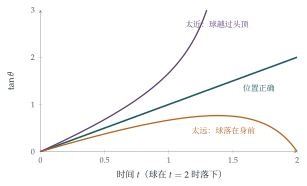

STEP II 1998，第 11 题
继续之前，请先阅读题目（原题为英文）。题目载于 STEP Support Programme 的题目资料库： step.maths.org/questions/98-s2-q11
引子
球被高高击向外野。出色的外野手会立刻起步，并且刚好在球落下的一刻赶到。这是怎样做到的？没有人能在不足一秒之内心算出抛体运动（projectile motion）的方程，何况外野手根本不知道球的速率和角度。然而外野手，以至接飞碟的狗，都能轻易做到。
1968 年，物理学家 Seville Chapman 提出了一个答案，而本题正是要证明它。假如外野手留意着球的仰角（angle of elevation）\(\theta\)，并且移动自己的位置，使 \(\tan\theta\) 以恒定的速率增加，她就会刚好到达球的落点。她毋须懂得任何物理，只需能察觉球看起来是升得比稳定上升快，还是比稳定上升慢。一个困难的预测问题，就这样换成了一条简单的反馈（feedback）法则。
动笔之前
设击球手位于原点，外野手在距离 \(D\) 处。若球位于 \((x, y)\)，\(\tan\theta\) 是甚么？
球在外野手眼睛上方高度 \(y\) 处，并在她前方水平距离 \(D - x\) 处（球正朝她飞来）。所以 \(\tan\theta = \frac{y}{D - x}\)。
逐步解题
阶段 1 位置恰到好处的外野手
设球的水平速率为 \(U\)，初始垂直速率为 \(W\)，并在时间 \(T\) 落下（回到眼睛的高度）。试以 \(U\)、\(W\)、\(T\)、\(g\) 和 \(t\) 表示 \(x\)、\(y\) 和 \(D\)。你能把 \(y\) 因式分解吗？
我们有 \(x = Ut\) 和 \(y = Wt - \frac12gt^2\)，而球在 \(T = \frac{2W}{g}\) 时回到眼睛的高度，外野手正在该处：\(D = UT\)。由于 \(W = \frac12gT\)， \[y = \tfrac12gt(T - t), \qquad D - x = U(T - t).\] 因子 \(T - t\) 可以约去： \[\tan\theta = \frac{\frac12gt(T - t)}{U(T - t)} = \frac{g}{2U}\,t.\] 所以 \(\frac{\mathrm{d}}{\mathrm{d}t}\tan\theta = \frac{g}{2U}\)，是一个常数。■
阶段 2 奔跑中的外野手
现在外野手从距离 \(D_0\) 处起步，以速率 \(v\) 跑向击球手，所以她的位置是 \(D_0 - vt\)。她在时间 \(T\) 接到球。\(D_0\) 是甚么？把刚才的计算重做一次。
要在时间 \(T\) 接到球，她必须身处球的落点：\(D_0 - vT = UT\)，所以 \(D_0 = (U + v)T\)。她与球的水平距离是 \(D_0 - vt - Ut = (U + v)(T - t)\)，而该因子同样可以约去： \[\tan\theta = \frac{\frac12gt(T - t)}{(U + v)(T - t)} = \frac{g}{2(U + v)}\,t.\] 所以只要她以适当的速率奔跑，\(\tan\theta\) 就会以恒定的速率增加。
题目问的是逆命题（converse）：假如她奔跑时令 \(\frac{\mathrm{d}}{\mathrm{d}t}\tan\theta\) 保持不变，她会接到球吗？
假设她以速率 \(v\) 奔跑，而 \(\tan\theta = \frac{\frac12gt(T - t)}{D_0 - (U + v)t}\) 以恒定的速率 \(c\) 增加，所以 \(\tan\theta = ct\)（在 \(t = 0\) 时它等于 \(0\)）。于是 \[\tfrac12g(T - t) = c\bigl(D_0 - (U + v)t\bigr) \quad\text{对所有 } t.\] 比较 \(t\) 的系数和常数项：\(\frac12g = c(U + v)\) 及 \(\frac12gT = cD_0\)。两式相除，得 \(D_0 = (U + v)T\)：这正是在时间 \(T\) 身处落点的条件。所以她应选择 \(v\) 使 \(\tan\theta\) 保持稳定上升，这样她就能接到球。■

回顾
找出公因子。高度和水平距离都含有 \(T - t\)，把它约去后，\(\tan\theta\) 就变成线性。
证明逆命题。要说明这条法则行得通（即它确实令人接到球），需要反方向的论证，也就是比较系数。
容易察觉的不变量（invariant）。\(\tan\theta\) 是否稳定上升，凭肉眼就能判断；落点则不能。
背后的数学
光学加速度抵消
Chapman 的法则现称为光学加速度抵消（optical acceleration cancellation）：外野手移动自己的位置，使“光学加速度”\(\frac{\mathrm{d}^2}{\mathrm{d}t^2}\tan\theta\) 保持为零。假如球的影像加速上升，球就会越过她的头顶，所以她要后退；假如影像减速，球就会落在她身前，所以她要向前跑（图 11.11.1）。这个策略没有告诉她球会落在哪里，却能把她带到那里。这是一条反馈控制律（feedback control law），与导引导弹所用的同出一辙：导弹采用比例导引（proportional navigation），使指向目标的视线角保持不变，那正是同一个想法的横向版本。
外野手实际怎样做
真实的外野手是否采用 Chapman 的法则？1990 年代有人把摄影机装在棒球外野手的头上做实验，结果并不一致。Michael McBeath 及其同事于 1995 年在 Science 上提出，对于打向一侧的球，外野手会沿弯曲的路线奔跑，使球的影像在视野中沿直线移动（即“线性光学轨迹”，linear optical trajectory），这同样能把他们带到接球的位置。其后的研究显示，这两种策略以及两者的混合都有人使用，而且外野手往往并非以恒定速率奔跑。2004 年的一项研究发现，接飞碟的狗所走的路线，与同样的光学法则吻合。无论细节如何，这个令人惊叹的结论依然成立：接球并不需要预测，只需要正确的反馈。
Seville Chapman 的“Catching a baseball”于 1968 年刊登在 American Journal of Physics，全文只有三页，内容基本上就是本题的计算。他指出这个策略只在没有空气阻力时才成立，而真实棒球的轨迹会因阻力和旋转而变形，令情况变得复杂。尽管如此，大脑利用视野中简单的不变量来解决复杂的控制问题，这个想法在心理学和机械人学中已变得十分重要。
思维技巧
当某个量难以预测时，不妨找一个与它相关、可以直接观察的量，而这个量恰好在一切顺利时表现得简单。
在这里，落点难以预测，但 \(\tan\theta\) 的变化率却容易监察。在大学里，这就是反馈控制的想法，也是选择一个可观察量、让它包含你所需信息的想法。
延伸练习
向后跑。假如球会落在外野手起步位置的后方，证明她应该背离击球手奔跑，而同一条法则依然适用。
不是 \(\theta\) 本身。证明对于位置恰到好处的外野手，\(\frac{\mathrm{d}\theta}{\mathrm{d}t}\) 并非常数。为甚么 \(\tan\theta\) 才是应该留意的量？
眼睛的高度。假如球是从外野手眼睛高度以下 \(h\) 的位置击出，对于位置恰当的外野手，\(\tan\theta\) 是否仍然是 \(t\) 的线性函数？（假设她在眼睛的高度接球。）
空气阻力。在线性空气阻力之下，水平速度会按指数衰减。对于位置恰当的外野手，\(\tan\theta\) 是否仍然是 \(t\) 的线性函数？
延伸阅读
Seville Chapman，“Catching a baseball”，American Journal of Physics 36 (1968)。
Michael McBeath、Dennis Shaffer 及 Mary Kaiser，“How baseball outfielders determine where to run to catch fly balls”，Science 268 (1995)。
Dennis Shaffer 等，“How dogs navigate to catch Frisbees”，Psychological Science 15 (2004)。